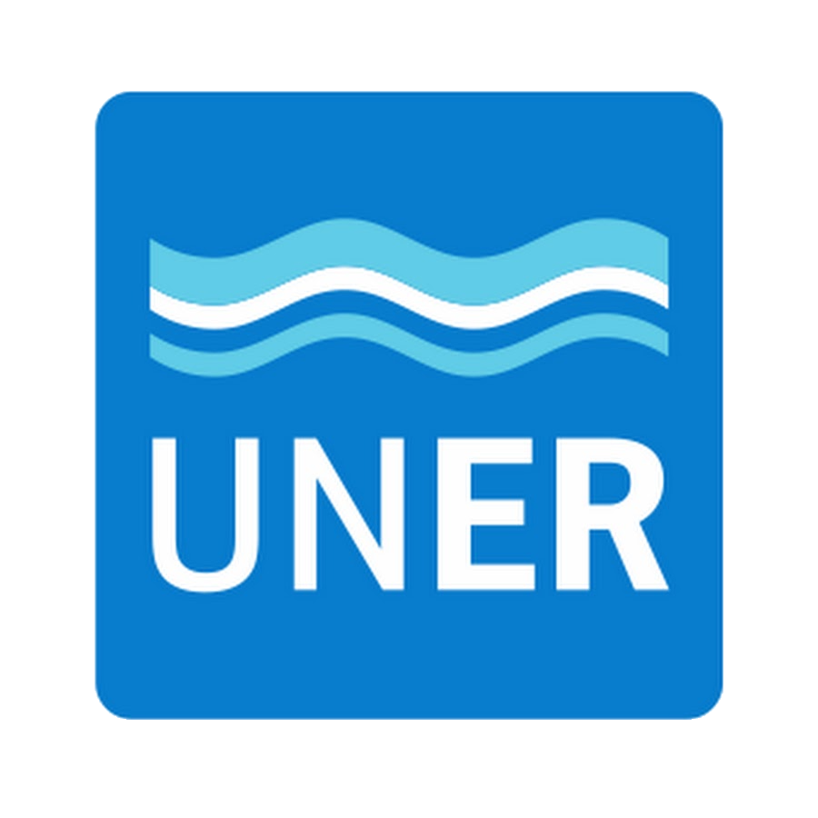

FACULTAD DE CIENCIAS
DE LA
ADMINISTRACIÓN
La Universidad Nacional de Entre Ríos integra el sistema público de educación superior. Considera a la educación como un derecho y un bien social, garantizando la gratuidad de los estudios de grado.
Somos una universidad con un proyecto institucional integral que potencia el alcance y el desarrollo continuo de la docencia, la investigación y la extensión, situada en su contexto local y regional y conectada internacionalmente; que desarrolla, democratiza,vincula y coconstruye conocimientos desde miradas interdisciplinarias, en función de las necesidades sociales,culturales y económicas de la región; atendiendo al buen vivir de los pueblos, en armonía con el ambiente. Nuestra Universidad, una institución comprometida con la formación de profesionales éticos, críticos y socialmente responsables. Promovemos la calidad académica, la gratuidad de los estudios y la inclusión de todos los estudiantes. Además, nos esforzamos por ser innovadores,comprometidos con la sostenibilidad y promover prácticas transparentes. Únete a nuestra comunidad universitaria comprometida con la transformación social.